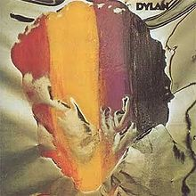

Toggle navigation
Bob Dylan Lyrics
Downloads
All Songs
All Albums
1960s
Bob Dylan (1962)
The Freewheelin' Bob Dylan (1963)
The Times They Are A-Changin' (1964)
Another Side of Bob Dylan (1964)
Bringing It All Back Home (1965)
Highway 61 Revisited (1965)
Blonde on Blonde (1966))
Bob Dylan's Greatest Hits (1967)
John Wesley Harding (1967)
Nashville Skyline (1969)
1970s
Self Portrait (1970)
New Morning (1970)
Bob Dylan's Greatest Hits, Volume II (1971)
Pat Garrett & Billy the Kid (1973)
Dylan (1973)
Planet Waves (1974)
Before the Flood (1974)
Blood on the Tracks (1975)
The Basement Tapes (1975)
Desire (1976)
Hard Rain (1976)
Street-Legal (1978)
Bob Dylan at Budokan (1979)
Slow Train Coming (1979)
1980s
Saved (1980)
Shot of Love (1981)
Infidels (1983)
Real Live (1984)
Empire Burlesque (1985)
Biograph (1985)
Knocked Out Loaded (1986)
Dylan & the Dead (1989)
Down in the Groove (1988)
Oh Mercy (1989)
1990s
Under the Red Sky (1990)
The Bootleg Series Volumes 1-3 (Rare & Unreleased) 1961-1991 (1991)
Good As I Been to You (1992)
World Gone Wrong (1993)
2000s
2010s
Dylan

Released: November 19, 1973
Length: 33:22
Producer:
Bob Johnston
Label: Columbia
By Bob Dylan
Side 1
Lily of the West
(Traditional, arranged by Bob Dylan)
Can't Help Falling in Love
(original authors:
George Weiss
,
Hugo Peretti
, and
Luigi Creatore
)
Sarah Jane
(Traditional, arranged by Bob Dylan)
The Ballad of Ira Hayes
(original author:
Peter LaFarge
)
Side 2
Mr. Bojangles
(original author:
Jerry Jeff Walker
)
Mary Ann
(Traditional, arranged by Bob Dylan)
Big Yellow Taxi
(original author:
Joni Mitchell
)
A Fool Such As I
(original author:
Bill Trader
)
Spanish Is the Loving Tongue
(original author:
Charles Badger Clark
)